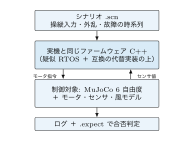

制御教育教材 StampFly Ecosystem の紹介
コーディングから飛行試験、データ取得まで
伊藤 恒平（金沢工業大学）
2026年9月10日（木）大阪大学中之島センター + Zoom
システム制御情報学会・計測自動制御学会 チュートリアル講座 2026
 この資料は CC BY 4.0（クリエイティブ・コモンズ 表示 4.0 国際）ライセンスで公開しています
この資料は CC BY 4.0（クリエイティブ・コモンズ 表示 4.0 国際）ライセンスで公開しています講師紹介
伊藤 恒平
金沢工業大学
情報理工学部 ロボティクス学科
StampFly Ecosystem の開発者。専門はドローンの飛行制御工学
- 4+1 日ワークショップ（大学生向け、一般の方も参加可。講義・実習と精密着陸競技会）で同じ教材を使用
- ZEP エンジニアリング主催の講習会（2025 年 8 月、品川、2 日間）
- 高校教員向け DXH 講座（2026 年 7 月、操縦体験と書き込み実習）
- 学会チュートリアル（本日）
開発環境の導入（先出し）: PC 側
未導入の方は Session 1 を聞きながら並行して。導入は CLI で行う（Windows のコマンドプロンプトで書く）
① 前提ツール: Git と Python 3.12 を入れる（Windows は winget、macOS は brew、Linux は apt。コマンドはリポジトリ直下 README）。終わったら CMD を開き直す
② 取得と導入
git clone https://github.com/M5Fly-kanazawa/stampfly_ecosystem.git
cd stampfly_ecosystem
install.bat
macOS / Linux は ./install.sh。ESP-IDF を尋ねられたら 1 を選ぶ
③ 有効化と診断: 新しい CMD を開くたびに setup_env.bat（macOS / Linux は source setup_env.sh）、続けて sf doctor
GUI 版インストーラは安定性未確認のため本講座では使わない
本日の進め方
講義とデモのハイブリッド
講師が実演しながら説明を進める。手元の環境構築でつまずいても、その場で全員を待たせることはしない
- 手を動かしたい方は、講師と同じコマンドを一緒に打ってみてほしい
- 進度が合わなかった箇所は、録画と資料を使って帰宅後に復習できる
各セッションの進め方
地図（今どこにいるか）→ このセッションで伝えること → デモ → 理論とコードの対応表 → 復習パス → チェックポイント
参加のしかたと資料
デモの3段階
- 見るだけ: 画面とスクリーンを見ているだけで流れがわかる
- 一緒に打つ: 持参のPCとStampFlyでコマンドを再現する
- 帰宅後に再現: 会場では見るだけにして、録画と資料で後日試す
資料はすべて公開されている
リポジトリ: https://github.com/M5Fly-kanazawa/stampfly_ecosystem
ドキュメント: https://m5fly-kanazawa.github.io/stampfly_ecosystem/docs/
本日の内容はオンデマンド配信でも後日視聴できる
今日の地図

セッション2・3は「実装」、セッション5は「解析・教育」を担当
StampFly Ecosystem は「設計 \(\to\) 実装 \(\to\) 実験 \(\to\) 解析 \(\to\) 教育」を循環させながら育ってきた。本日の5セッションはこの循環の上を進む
| S1 | 10:05 – 11:00 |
| S2 | 11:00 – 12:00 |
| (昼休み) | |
| S3 | 13:00 – 14:00 |
| S4 | 14:00 – 15:00 |
| (休憩) | |
| S5 | 15:30 – 16:30 |
必要機材と安全ルール
持参いただくもの
ノートPC、StampFly 実機とコントローラ（いずれも実習に参加する場合）
飛行時の安全ルール
- 飛んでいる機体からは距離を保つ
- 飛行は指定のエリアの中だけで行う
- 飛行の操作は必ず立って行う。座ったまま飛ばさない
- ARM は機体ボタンの単クリックまたはコントローラで行う。予期せず回転したら即座に DISARM
- 機体の真上には顔や手を出さない
地図: 今ここ

今日はこの循環を 5 つのセッションで 1 周する。まずは全体像と設計思想から
StampFly Ecosystem とは何か: 目的・考え方・提供物
- 何のために: 制御なしには飛べないマルチコプタを教材にし、一人の学習者が 1 機で「設計 \(\to\) 実装 \(\to\) 実験 \(\to\) 解析」を自分の手で一周できるようにする
- どういう考え方で: 一つのリポジトリ・4 階層の入口・同じコードとモデルで実機とシミュレータをつなぐ（5 つの設計の考え方）
- 何を提供するか: 機体、ファームウェア、3 種類のシミュレータ、sf CLI、そして 8 分野を通る教材。本日の実習 1〜9 はその教材の一部
目的: 制御がなければ飛べない
マルチコプタは固定翼機のように滑空できず、ヘリコプタのようにオートローテーションで降りることもできない。制御系が止まれば即座に墜落する
教材としての魅力
この性質は安全上の課題であると同時に、学習者が「制御がなければ飛べない」という事実を身をもって体験できる特性でもある。フィードバック制御の役割を直感的に理解する入口になる
目的: 教材として使うには 4 つの障壁がある
制御なしには飛べないマルチコプタは制御教育の教材として魅力的だが、実際の教育現場で使うには次の 4 つの障壁がある
- ブラックボックス問題: 市販の教育用ドローンは飛ぶが、制御ループの中身に触れられない
- 理論と実装のギャップ: PIDの数式は教科書で学べても、組込みのリアルタイム制御ループとして実装するには別のスキルが要る
- 体系的教材の不在: センサ取得から状態推定、制御、実験、データ解析までを一貫して学べる教材が見当たらない
- 教育者の準備負担: カリキュラム設計・教材作成・ツール整備を一人の教育者がすべて担うのは現実的でない
目的: 既存プラットフォームとの比較
既存のプラットフォームは、この 4 つの障壁のどれかが残る
| Crazyflie | Tello EDU* | PX4 | StampFly Eco. | |
|---|---|---|---|---|
| 制御ループアクセス | ✓ | — | ✓ | ✓ |
| 教材・カリキュラム | \(\triangle\) | \(\triangle\) | \(\triangle\) | ✓ |
| シミュレータ統合 | ✓ | — | ✓ | ✓ |
| コスト | 高 | 低 | 高 | 低 |
| コード規模 | 中 | — | 大 | 小 |
制御ループへのフルアクセスと体系的な教材・ツールの統合提供を両立させ、ファームウェア全体を一人の学習者が読み通せる規模に抑えている点が異なる
*Tello EDU は2023年末に販売終了（評価は筆者の定性的見解）
目的: StampFly Ecosystem が目指すもの
一人の学習者が、1 機の機体で、制御設計の循環を自分の手で一周できるようにする
設計（モデルとゲイン）\(\to\) 実装（コード）\(\to\) 実験（実機と SILS）\(\to\) 解析（ログの可視化と同定）\(\to\) 次の設計へ。対象は制御を学ぶ学生・研究者と教育者
| 障壁 | Ecosystem の答え |
|---|---|
| ブラックボックス問題 | 制御ループからドライバまで全部を公開し、学習者が読み通せる規模に抑える |
| 理論と実装のギャップ | 実機と同じコードをシミュレータでも動かし、数式と組込み実装を切れ目なく扱う |
| 体系的教材の不在 | センサ取得・状態推定・制御・実験・解析を 1 機で通る教材とツールを同梱する |
| 教育者の準備負担 | 教材・実習コード・ビルドと書き込みの道具を一式で配り、準備を減らす |
思想: 5 つの Ecosystem 設計の考え方
| 考え方 | 内容 |
|---|---|
| 一つのリポジトリ | ファーム・シミュレータ・解析ツール・教材を一か所にまとめる。通信仕様の定義は一つだけ置き、各実装はそこから作る |
| sf CLI | ビルド・書込み・ログ取得・シミュレーションを一つのコマンド体系で操作する |
| 4 階層アクセス | 実習用 API からハードウェアの直接操作まで 4 つの入口を用意し、必要な深さから入る |
| シミュレータ統合 | 軽量 3D（VPython）・高精度物理（Genesis）・実ファーム実行（SILS）の 3 つを使い分け、同じ物理パラメータとゲインでつなぐ |
| オープンソース | 制御ループからドライバまで全部を公開し、ブラックボックスを作らない |
思想: 4 階層アクセス（必要な深さから入る）

思想: 実機とシミュレータをつなぐ 3 原則
| 原則 | 内容 |
|---|---|
| Code Identity | 同じコードで動く。SILS は実機と同じファームウェアのソースをそのまま組み込んで動かす。推定や制御の式だけでなく、制御ループ全体が実機と同一 |
| Parameter Identity | 同じ設定値で動く。ゲインなどの調整値は SILS と実機が同じ一覧から読む。片方で決めた値をそのまま他方へ持ち込める |
| Model Fidelity | 正解は物理モデルから作る。SILS の「真値」は物理モデルで作る。実機データが要るのは、初飛行のあとでモデルを現実に近づけるときだけ |
提供: エコシステムの地図

提供: 機体 StampFly

| 項目 | 仕様 |
|---|---|
| MCU | ESP32-S3（M5StampS3） |
| IMU | BMI270（6軸 400 Hz） |
| 気圧 | BMP280 |
| 磁力計 | BMM150（3軸） |
| 測距 | VL53L3CX \(\times\)2（Bottom / Front） |
| 光学フロー | PMW3901 |
| 電流電圧 | INA3221 |
| モータ | コアレスモータ \(\times\)4 |
| バッテリ | 300 mAh 1S LiPo |
| 質量 | 37 g（バッテリ含む） |
| コントローラ | M5Stack AtomS3 + Atom JoyStick（ESP-NOW） |
IMU（慣性計測装置）／ESP-NOW（ESP32 の無線プロトコル）。前方 ToF は未使用（高度推定は下方 ToF）
提供: 機体ファームウェア（vehicle）
| コンポーネント数 | 30（sf_* 命名, フラット構造） |
| 通信方式 | Pub-Sub トピック（直接呼び出し禁止） |
| タスク数 | 16 |
| 制御周期 | 400 Hz（IMU \(\to\) 状態推定 \(\to\) 制御） |
| 状態推定 | ESKF（誤差状態カルマンフィルタ） |
| 制御器 | カスケード PID |
| 飛行モード | ACRO / STABILIZE / ALT_HOLD / POS_HOLD |
Pub-Sub（出版購読型のメッセージ配信）
実機検証
POS_HOLD（位置制御）は実機で検証済み。保持精度 \(\pm\)6–7 cm
提供: 400 Hz 制御ループ

IMU 割込みを起点に、状態推定 \(\to\) 制御 \(\to\) アクチュエーションが 2.5 ms 周期で走る。全コンポーネントが同じ周期を共有する
提供: シミュレータ — 役割の違う 3 つの実行環境
| 名前 | 役割 | 物理モデル | 動く制御コード | 可視化 |
|---|---|---|---|---|
| SILS | ファームの開発と制御系の実装を、机上である程度完了させる。飛ばす前の検証と合否判定（実習 8 (2/2)） | MuJoCo（外部エンジン、物理計算のみ）＋自作のモータ・センサ・風モデル | 実機と同じ C++ ファームそのもの | ブラウザ GUI（three.js の 3D とグラフ） |
| VPython 版 | 練習用。簡単で読みやすい Python で、力学エンジン・3D 表示・センサモデルなど「シミュレータの作り方」を学ぶ（デモ①） | 自作の 6 自由度モデル | Python に移植した制御則 | VPython のブラウザ 3D |
| Genesis 版 | 強化学習向けの選択肢として残している。今日は使わない | Genesis（外部の高精度エンジン） | Python の制御則 | Genesis の 3D |
なぜ 1 つでは足りないか
「実機のファームをそのまま動かして検証する」「中身を読んで作り方を学ぶ」「強化学習を回す」は要求が違い、1 つの実装では両立しない。3 つは同じ物理パラメータ（stampfly_physical.yaml、sf params check で照合）を共有する
提供: SILS の仕組み — 実機のファームを PC で走らせる
- ファームは無改変: 実機に書き込む vehicle のソースをそのまま PC 向けにコンパイル（状態機械・フェイルセーフも含む）
- OS の代わり: 仮想時計で動く決定論的な疑似 RTOS と ESP-IDF 互換スタブ。同じ入力なら毎回同じ結果
- 制御対象: MuJoCo（6 自由度）＋自作のモータ・センサ・風モデル。400 Hz でファームと歩調を合わせる
- 試験の与え方: シナリオ
.scnに操縦・外乱・故障を時系列で書き、.expectで PASS / FAIL を自動判定。CI で既存動作の破壊を検出 - 実習コードも同じ土俵: 参加者の
user_code.cppも同じ仕組みで飛ぶ（実習 8 (2/2)） - できないこと: 複数タスクの競合、実際の WiFi / ESP-NOW の電波

提供: SILS を画面で触る（sf sils gui）

pos_roll シナリオ実行直後。左: イベント列、右上: 3D 再生、右下: グラフ（時刻カーソルが 3D と同期）、右上端: 合否 12/12 PASS
- ブラウザだけで完結: シナリオ作成（外乱・故障などのイベントを表で組む）\(\to\) 実行 \(\to\) グラフ \(\to\) 合否判定
- PID ゲイン等 54 項目を画面で編集。再ビルド不要（Parameter Identity）
- 使い方と実習は S5。今日は画面を覚えるだけでよい
sf sils build
sf sils gui
提供: 教材 — 1 機から学べる 8 分野
教材は 1 機から次の 8 分野を扱う。本日の実習 1〜9 は制御理論・センサ工学・アクチュエータ・システム同定・状態推定を通る
| 分野 | 主な学習項目 |
|---|---|
| 制御理論 | PID, カスケード制御, FF/FB, アンチワインドアップ |
| 飛行力学 | 6DoF運動方程式, ホバー条件, NED/Body座標変換 |
| センサ工学 | IMU, 気圧, 光学フロー, Allan分散, ノイズ解析 |
| 状態推定 | 相補フィルタ, ESKF, センサフュージョン |
| アクチュエータ | PWM制御, 推力モデル, プロペラ空力特性, ミキサ行列 |
| システム同定 | 周波数応答, パラメータ推定, モデル検証 |
| 通信・IoT | ESP-NOW, WiFiテレメトリ, プロトコル設計 |
| ソフトウェア工学 | リアルタイムタスク, 組込み開発, OSS開発 |
これらは独立した知識ではなく、1台の機体の中で密接に関連し合っている。PIDゲインの設計には慣性モーメントやモータ応答特性の知識が要り、推定精度はセンサのノイズ特性に左右される
デモ①: シミュレータ操縦
何を見るか
-
sf sim run vpythonを手元でも起動 - VPythonシミュレータが起動し、実機と同じ制御アルゴリズムが動く
- HIDジョイスティック（Atom JoyStick）でそのまま操縦できる
- 実機がなくても制御コードの挙動を3Dで確認できる

VPython シミュレータの画面（ボクセル地形を飛行中）
デモ②: 実機 POS_HOLD 飛行
何を見るか
- ホバー中の位置保持精度（実測 \(\pm\)6–7 cm）
- 手で軽く押すなどの外乱を与えたときの復帰動作
デモ②の期待結果: 位置保持
Web 版のみデモ②の期待結果: 高度と姿勢

同じ飛行の高度と姿勢角の時系列。外乱直後の傾きが位置制御で戻る
復習パス
あとで読む| コマンド | 対象 | 文書 |
|---|---|---|
sf sim run vpython | シミュレータ操縦 | docs/\allowbreak architecture/\allowbreak simulation-policy.md |
sf sils gui | SILS シナリオ実行・可視化 | simulator/\allowbreak sils/\allowbreak gui/\allowbreak README.md |
| — | 4階層アクセス | firmware/\allowbreak vehicle/\allowbreak docs/\allowbreak architecture.md §2 |
チェックポイント
確認事項
- \(\square\) 何のために: 制御なしに飛べない機体で設計の循環を一周する、と説明できる
- \(\square\) どういう考え方で: 一つのリポジトリ・4 階層の入口・同じコードとモデル、と説明できる
- \(\square\) 何を提供するか: 機体・ファーム・3 種類のシミュレータ・sf CLI・教材を挙げ、自分の入る層を 1 つ選べる
次のセッション
S2: 開発環境のセットアップとセンサデータの取得（11:00 – 12:00）— 全体像を見た次は、実際に手を動かしてセンサの値を読む番
地図: 今ここ

S1 で見た全体像のうち、まず実装の入口（環境構築とセンサ取得）から手を動かす
環境を整え、2 つの関数を書き、センサの値を見る
- ビルド環境は ESP-IDF と
sf CLIが担う。導入も書き込みも sf CLI で行う - 参加者が書くコードは
setup()とloop_400Hz(dt)の2関数だけ。センサやHWの詳細はws::名前空間が隠す - センサデータの取得経路は3通りある。目的に応じて
ws::print、sf telemetry、sf log wifiを使い分ける
OS による違いはここだけ
| OS | インストール | 環境の有効化 |
|---|---|---|
| macOS / Linux | ./install.sh | source setup_env.sh |
| Windows（CMD） | install.bat | setup_env.bat |
Windows は Git 同梱の CMD（コマンドプロンプト）でそのままファイル名を打つ。./ も source も付けない
書き込み時のシリアルポート名も違う
sf flash vehicle -p /dev/ttyACM0（Linux）／-p /dev/cu.usbmodem*（macOS）／-p COM3（Windows）
違いはこの2点だけ。sf コマンド自体（sf build、sf lesson 等）とワークフローは3 OSで完全に同一
開発環境の導入: 機体とペアリング
書き込みは sf flash vehicle / sf flash controller で行う
本講座の操作はすべて sf CLI で行う
コントローラのペアリング（初回のみ）
- コントローラの LCD パネルボタンを押しながら電源を入れる
- StampFly 本体のボタンを 3 秒以上押し続け、ビープが鳴ったら離す（5 秒以上押し続けるとシステムリセット）
- 双方がビープしたらペアリング完了。以降は電源を入れるだけで自動再接続する
実習 1 (1/2): 環境確認とビルド
手順
-
setup_env.bat（macOS / Linux はsource setup_env.sh） -
sf doctor（ESP-IDF・Python・USBドライバ・sf CLI 自体を診断） -
sf build vehicle（機体ファームをビルド。初回は数分かかる） -
sf flash vehicle -m（USB で書き込み、続けてモニタを開く。終了はCtrl+]）
確認すること
書き込み直後に起動音が鳴り、LED が白（初期化中・静置）\(\to\) 緑常灯（準備完了）になる。モニタに起動ログが流れる
sf doctor が全て OK にならなくても心配は不要。このあとは「見るだけ」で参加し、復習パス（本セッション末尾）に沿って会場外で環境を整えてほしい
実習 1 (2/2): 機体の初期設定を一度に済ませる
USB をつないだまま、モニタ（CLI）で順に打つ
機体ごとに 1 回。N は講師が指定（1 / 6 / 11）
param reset
param set wifi.mode 1
param set wifi.channel N
param save
reboot
続けてコントローラとペアリング
コントローラの LCD パネルボタンを押しながら電源を入れ、機体のボタンを 3 秒以上押し続ける。双方がビープしたら離す（5 秒以上押し続けるとシステムリセット）。以降は電源投入だけで自動再接続
wifi.mode 1: 機体が自分の WiFi を出す（後半で使う）。wifi.channel: 混信を避ける機体ごとのチャンネル。コントローラはペアリング時に自動で合わせる
ツールチェーン
ESP-IDF の上に sf CLI を重ねる
idf.py を直接叩く代わりに、ビルド・書き込み・診断・ログ取得を統一したコマンド体系で提供する
| コマンド | 役割 |
|---|---|
sf build [target] | ファームウェアビルド |
sf flash [target] -m | 書き込み（-m でモニタ付き） |
sf monitor | シリアルモニタ |
sf doctor | 環境診断 |
target には vehicle（機体）/ controller（送信機）を指定する。実習 1 で打った 4 コマンドがこの表の全てである
参加者が書くコードと作業の流れ
参加者が編集するファイルは user_code.cpp の1つだけ。本資料ではこれを「実習コード」と呼ぶ
参加者が書く関数は2つだけ
-
setup()— 起動時に1回 -
loop_400Hz(dt)— 400 Hz毎
切替・編集・ビルド・書き込み
sf lesson switch sci2026:N
sf lesson edit
sf lesson build
sf lesson flash
sf lesson monitor

機体の軸定義

BMI270 — 6軸（3軸ジャイロ + 3軸加速度）400 Hz | Body FRD（前方-右-下）座標系
機体の Body 座標系（前方-右-下）を先に決め、IMU の軸はそれに一致するように扱っている
IMU API と単位
| 関数 | 説明 | 単位 |
|---|---|---|
gyro_x/y/z() | 角速度（Roll/Pitch/Yaw） | rad/s |
accel_x/y/z() | 加速度（X/Y/Z） | m/s2 |
静止時の目安
ジャイロ \(\approx 0\)、加速度 Z \(\approx -9.81\) m/s2（重力に対する反力）
実習 2: IMU の値を見る
手順
-
sf lesson switch sci2026:2 -
sf lesson editでuser_code.cppを開き、次ページのコードを書いて保存 -
sf lesson build -
sf lesson flash -
sf lesson monitor（sf lesson flash直後はそのまま開く）
確認: Teleplot の波形
VSCode 拡張 alexnesnes.teleplot 上で gyro_x/gyro_y の波形が動くこと
帰宅後に再現: 同じ手順（switch \(\to\) edit \(\to\) build \(\to\) flash \(\to\) monitor）をそのまま実行すればよい
データ取得経路① Teleplot
ws::print をそのままグラフにする
>変数名:値 の形式で出力すると、VSCode拡張機能 Teleplot がリアルタイムにグラフ化する
static uint32_t tick = 0;
void loop_400Hz(float dt) {
if (tick++ % 4 == 0) { // 100Hz decimation
ws::print(">gyro_x:%.3f", ws::gyro_x());
ws::print(">gyro_y:%.3f", ws::gyro_y());
}
}
VSCode 拡張 alexnesnes.teleplot を導入後、sf lesson monitor で接続（sf lesson flash 直後はそのまま開く）
実習 2: 傾けて確認
何を見るか
- StampFly を手に持ち、前後左右に傾ける
-
gyro_x/gyro_yが傾ける速さに応じて振れる - 静止させると
accel_zが \(-9.81\) 付近に戻る
前ページまでの sf lesson build && sf lesson flash 完了後、Teleplot 画面を見ながら機体を傾ける
WiFi でつなぐ: 有線と無線の使い分け
飛行中は USB を挿せない
USB ケーブルは機体と PC を物理的につなぐため、実際に飛ばしながらは使えない。 その場でのゲイン変更や飛行中のデータ取得には WiFi 接続が要る
| USB（有線） | WiFi（無線） | |
|---|---|---|
| ビルド・書き込み | ✓ | — |
起動ログ確認（sf monitor） | ✓ | — |
| 50 Hz テレメトリのライブ表示 | — | ✓ |
| 飛行中の 400 Hz 全データ記録 | — | ✓ |
| パラメータの即時変更（飛行中も反映） | — | ✓ |
| システム同定・ゲイン設計 | — | ✓ |
右列は sf telemetry（UDP:5005）／sf log wifi（UDP:8890）／
param set（WiFi 経由の CLI，TCP:23）のいずれかを使う。次ページで接続方法を説明する
接続手順: 機体を WiFi 網に入れる
機体側: 実習 1 (2/2) の初期設定で済んでいる
wifi.mode 1（機体が自分の WiFi を出す設定）は初期設定で保存済み。未設定の機体だけ、USB 接続のまま sf monitor の CLI で param set wifi.mode 1 \(\to\) param save \(\to\) reboot
PC 側: 機体の WiFi に接続する
機体が StampFly-XXYY（MAC 末尾から自動生成の SSID）を出す。
PC の WiFi 設定で選び，既定パスワード stampfly を入力。
IP は既定 192.168.10.1（DJI Tello 互換サブネット）
接続の確認: sf telemetry（受信できれば OK，IP 指定不要）。
会場の WiFi ではなく機体自身が出す AP に繋ぐ（機体ごとに SSID が異なる）
データ取得経路② sf telemetry
あとで読むコード変更なしでライブ表示
機体は状態推定値を常時 50 Hz で送信している。受信して表示するだけなら実習コードの変更は不要
sf telemetry # ターミナル表示（既定）
sf telemetry --web # ブラウザ表示（UDP:5005 -> SSE）
講義や複数人での画面共有には --web が見やすい。UDP:5005 を SSE（サーバーからブラウザへの一方向配信）でブラウザへ届けている
データ取得経路③ ログ取得と可視化
あとで読むWiFi 経由で 400 Hz Data Stream を記録する
sf log wifi は機体と同じ WiFi（SoftAP モードなら機体が出す AP）で 400 Hz の Data Stream を UDP 受信し、-o *.csv で 1 周期 1 行の CSV に保存する
sf log wifi -d 30 -o flight.csv # 30秒キャプチャ -> Data Stream CSV
sf log viz flight.csv
使い分けの目安
Teleplot = その場で波形を見る／sf telemetry = コード変更なしで確認／sf log wifi = 後で解析するためのデータ保存
他のセンサ
あとで読むIMU 以外のセンサも同じ考え方で読める。時間の都合で本セッションでは扱わないが、単独ビルド可能な例題として用意してある
| 例題 | センサ |
|---|---|
firmware/vehicle/examples/05_read_tof | VL53L3CX（ToF距離センサ） |
firmware/vehicle/examples/06_read_baro | BMP280（気圧センサ） |
実習 1 と同じ sf CLI で単独ビルド・書き込みできる: sf build vehicle/examples/05_read_tof \(\to\) sf flash vehicle/examples/05_read_tof -m
理論とコードの対応表
あとで読む目的: 理論の各項目が実装のどこにあるか（関数・Data Stream 列・トピック）を後で引ける索引にする
| 理論 | コード | Data Stream 列 | トピック |
|---|---|---|---|
| 角速度 \(\omega\) [rad/s]、Body FRD | ws::gyro_x() | gyro_x | sensor_imu |
| 並進加速度 \(a\) [m/s2] | ws::accel_x() | accel_x | sensor_imu |
参加者が呼ぶ ws:: 関数は、内部で sensor_imu トピックを購読しているだけである
（アクセス階層 L0（実習用 API）\(\to\) L1（Topic API）の対応）
復習パス
あとで読む| コマンド | 実習 | 文書 |
|---|---|---|
sf doctor / sf build vehicle / sf flash vehicle -m | 実習1（環境確認とビルド） | docs/\allowbreak guides/\allowbreak troubleshooting.md |
sf lesson switch sci2026:2 | 実習2（IMU） | firmware/\allowbreak vehicle/\allowbreak docs/\allowbreak architecture.md §2 |
sf log wifi / sf log viz | — | docs/\allowbreak guides/\allowbreak flight-log-viz.md |
チェックポイント
確認事項
- \(\square\)
sf doctorが通る - \(\square\)
setup()/loop_400Hz(dt)の2関数構造を説明できる - \(\square\) ジャイロ・加速度をどれか1つの経路で確認できた
次のセッション
S3: モータ制御とコントローラ入力の実装 — センサの次は、機体を動かす側を作る
地図: 今ここ

S2 でセンサの値を読めるようになった。ここでは読んだ値を使って機体を動かす側（モータ・コントローラ）を作る
モータを回し、操縦し、それだけでは飛べないと知る
- モータは PWM（パルス幅変調）の Duty 比で駆動する。4基の配置と回転方向はトルクバランスで決まっている
- コントローラのスティック値は ESP-NOW で 14 バイトの
ControlPacketとして届く -
ws::motor_mixer(T,R,P,Y)で手動ミキシングしても、フィードバックがない限り安定して飛べない。ここに次セッションの動機がある
安全
モータを回す実習の注意
- 必ず机上で行う。回転中はモータに手を近づけない
- Duty は 0.15 以下に固定する。ファーム側では強制されないので数値を必ず確認する
- ARM は機体ボタンの単クリックまたはコントローラで行う。コードの中で自動 ARM しない
- 異常な振動・音・回転が起きたら即座に DISARM（機体ボタン再クリック）
止め方: 機体ボタンをもう一度クリック（DISARM）。バッテリー駆動での確認を基本とする
モータと PWM

- LEDC（ESP32 のハードウェア PWM）でモータを駆動する
- Duty 0% = 停止、100% = 最大回転
- API:
ws::motor_set_duty(id, duty)
id=1–4, duty=0.0–1.0
モータ配置

- モータ ID: 1=FR（右前）、2=RR（右後）、3=RL（左後）、4=FL（左前）
- 対角のモータが同じ方向に回転する。M1・M3 = CCW、M2・M4 = CW（反トルクを打ち消す）
実習 3: Duty をハードコードして回す
-
sf lesson switch sci2026:3 -
sf lesson editで右のコードにして保存 -
sf lesson build -
sf lesson flash - 機体ボタンを1回クリックして ARM
- 確認: FR モータだけが回る
void loop_400Hz(float dt) {
ws::motor_set_duty(1, 0.10f); // FR
ws::motor_set_duty(2, 0.00f); // RR
ws::motor_set_duty(3, 0.00f); // RL
ws::motor_set_duty(4, 0.00f); // FL
}
注意: 配布される模範解答（--solution）は起動時に自動 ARM する。必ず机上に置いた状態で起動すること（コードの中で自動 ARM しない）
コントローラ

ESP-NOW と ControlPacket

コントローラとStampFlyは ESP-NOW で直接通信する。1パケット ControlPacket は 14バイト（throttle/roll/pitch/yaw + flags + checksum）を約 50 Hz（TDMA フレーム周期 20 ms）で送信する
TDMA で 30 機を同時に飛ばす
TDMA（時分割多重アクセス、Time Division Multiple Access）
1つの無線チャンネルを短い時間枠（スロット）に分割し、機体ごとに送信タイミングをずらして電波の衝突を避ける方式
| フレーム周期 20 ms、スロット幅 2 ms | \(\to\) 1フレーム10スロット |
| 1チャンネルあたり最大10機 | 非重複3チャンネル（1/6/11ch）で理論上30機 |
なぜ必要か
教室で複数の送信機が無調整のまま同時に電波を出すと衝突し、機体が通信途絶と判断して自動着陸する
スロットの割当
タッチメニューで Device ID（0–9）を手動設定し NVS（不揮発性メモリ）に保存（再起動後に反映）。ID=0 が20 msごとにビーコンを送る「親機」、他はその受信時刻を基準に自分のスロットのみで送信する。ペアリングでは自動割当されない
ペアリングとチャンネル
ペアリング
コントローラの M5 ボタン（LCD パネル）を押しながら電源ON \(\to\) StampFly のボタンを 3 秒以上押し続け、両方のビープで離す（5 秒以上でシステムリセット）。次回以降は自動接続
チャンネル設定
教室内で複数機体が同時に飛ぶと混信する。チャンネルは実習 1 (2/2) の初期設定で param set wifi.channel N（1/6/11、講師が指定）として保存済み。実習コードの中では変更しない。コントローラはペアリング時に機体のチャンネルへ自動追従する
自分で購入したコントローラを使う場合
ご購入直後のコントローラには出荷時点のファームウェアが入っているが、本チュートリアルで使う版とは異なる。最初に一度だけ、sf flash controller で書き込み直す必要がある
オープンループ制御

ws::rc_throttle/roll/pitch/yaw() | スティック値の取得 |
ws::motor_mixer(T, R, P, Y) | 4モータへの配分 |
ミキサ行列
Web 版のみ実習 4: スティックでモータを回す
-
sf lesson switch sci2026:4 - コントローラとペアリング
-
sf lesson editで右のコードにして保存 -
sf lesson build -
sf lesson flash - 確認: スティックで回転差が出る
void loop_400Hz(float dt) {
float t = ws::rc_throttle();
float r = ws::rc_roll();
float p = ws::rc_pitch();
float y = ws::rc_yaw();
ws::motor_mixer(t, r, p, y);
}
これでは飛べない理由
モータの個体差，機体のミスアライメント（推力軸のずれ・重心ずれ），電池電圧の低下といった外乱に対して何の補正もかからないため，スティック指令どおりの回転を保てない
プラントの定義
本セッションで作った経路（ミキサ \(\to\) モータ \(\to\) 機体）が、そのまま制御対象（プラント）の入出力になる

- 入力: ミキサが出す4つの Duty（
ws::motor_mixer(T,R,P,Y)の R/P/Y トルク指令に相当） - 出力:
ws::gyro_x/y/z()が返す角速度の実測値
次セッションへ
S4 の PID 制御器がこの間にフィードバックループを作り，出力を目標値に近づける。伝達関数とゲイン \(K_p\) の設計が S4「フィードバック制御の基礎」の主題である
理論とコードの対応表
あとで読むここまで登場した理論用語・API・通信・実装トピックの対応を一覧できるようにまとめた早見表
| 理論 | コード | 通信 | トピック |
|---|---|---|---|
| Duty比 \([0,1]\) | ws::\allowbreak motor_set_duty(id,d) | — | actuator_\allowbreak motor |
| スティック指令 \(T,R,P,Y\) | ws::\allowbreak rc_throttle() 等 | ControlPacket（14B） | command_\allowbreak setpoint |
| ミキシング | ws::\allowbreak motor_mixer(T,R,P,Y) | — | — |
復習パス
あとで読む| コマンド | 実習 | 文書 |
|---|---|---|
sf lesson switch sci2026:3 | 実習 3 モータ制御 | firmware/\allowbreak vehicle/\allowbreak docs/\allowbreak hardware_init.md |
sf lesson switch sci2026:4 | 実習 4 コントローラ入力 | protocol/\allowbreak spec/（ControlPacket） |
sf flash controller | — | docs/\allowbreak commands/\allowbreak sf-flasher.md |
すべて sf lesson build \(\to\) sf lesson flash で実機に反映する
チェックポイント
確認事項
- \(\square\) Duty とモータ配置・回転方向の対応を説明できる
- \(\square\) ControlPacket がどの経路（ESP-NOW）でどれだけの頻度で届くか説明できる
- \(\square\) オープンループ制御が「なぜ飛べないか」を自分の言葉で説明できる
次のセッション
S4: フィードバック制御の基礎 — PID による姿勢安定化（14:00 – 15:00）
地図: 今ここ

S2・S3 で組み上げた機体を、本セッションでは制御理論と突き合わせて飛ばす。 「設計 \(\to\) 実装」の次にくる「実験」のフェーズにあたる。
本セッションで扱うもの
レート P 制御の初飛行 \(\to\) プラントモデルによる裏付け \(\to\) PID 化 \(\to\) 姿勢推定 \(\to\) 周波数同定による裏取り
勘の P 制御を、モデルと数値で説明できるようにする
- まず勘で P 制御（\(K_p=0.5\)）を飛ばし，次にモータ+機体の プラント伝達関数 \(G_p(s)=K/(s(\tau_m s+1))\) を実測パラメータから 導出して，その「勘」を数値で説明する
- I 項・D 項を追加して PID 化し（定常偏差とオーバーシュートの改善）， ジャイロだけでは求まらない長時間の姿勢を姿勢推定（相補フィルタ）で補う
- 最後に，周波数同定（チャープ励振 \(+\) ETFE）でモデルと実機の一致を 裏取りし，仕様ベースの自動チューニングにつなぐ
本セッションの立ち位置
ここまでのレッスンは動かすことが目的だった。ここからは，動いた結果を モデルと数値で説明できるかを問う
フィードバック制御とは
開ループ: 出力を測らない

閉ループ: 出力を測って指令にフィードバック
- 開ループ: スティック指令をそのままモータへ送るだけ。 外乱（風・機体の左右非対称）やモデル誤差がそのまま出力に出る
- 閉ループ: 出力（角速度 \(\omega\)）を測り，目標との誤差 \(e=r-\omega\) をコントローラにフィードバックする。誤差が縮む方向に 常に補正がかかる
右図に埋め込まれた式 \(G_{cl}(s)\) の中身は「閉ループ伝達関数と2次系 パラメータ」で導出する。ここでは「誤差を測って戻す」という構造だけを見る
内側ループと外側ループ

- この図は内側ループ（レート制御）: 目標角速度とジャイロ計測値の差を制御。 ACRO はこのループ単体で完結する
- 外側ループ（姿勢制御）は，この図の入力 Target Rate を作る側にもう1段乗る。 目標姿勢角と推定角の差から目標角速度を作り，STABILIZE 以上で有効になる （カスケード = ループの入れ子）
実習 5: レート P 制御で初飛行
コード: 一緒に打つ ｜ 飛行: 見るだけ（講師） ｜ 帰宅後に再現
実装する内容（user_code.cpp の TODO）
誤差 \(=\) 目標角速度 \(-\) 実測角速度，出力 \(=K_p\times\)誤差 を Roll/Pitch/Yaw
それぞれで計算し ws::motor_mixer(T,R,P,Y) に渡す。角速度目標は
ws::set_rate_target(roll,pitch,yaw) で Data Stream に記録しておく
（実習 7 のシステム同定で使う）
-
sf lesson switch sci2026:5 -
sf lesson editで TODO を埋めて保存（ws::gyro_x/y/z()，ws::rc_roll/pitch/yaw()） -
sf lesson build（ここまで各自） - 飛行は講師が完成コード（\(K_p=0.5\)）で行う。スティック追従とわずかな振動を見る
帰宅後に sf lesson flash して自分の \(K_p\) で飛ばして再現する
実習 5 の振り返り: 実習コード
float Kp_rp=0.5f, Kp_yaw=2.0f, rmax=1.0f, ymax=5.0f;
float re = ws::rc_roll()*rmax - ws::gyro_x();
float pe = ws::rc_pitch()*rmax - ws::gyro_y();
float ye = ws::rc_yaw()*ymax - ws::gyro_z();
ws::motor_mixer(ws::rc_throttle(),
Kp_rp*re, Kp_rp*pe, Kp_yaw*ye);
実習 5 では飛ばして安定するかどうかだけを見た。\(K_p=0.5\) は勘で決めた値である。 この値がどれくらい「良い」のかは，このあとプラントモデルで裏付ける
ステップ応答の読み方
あとで読む
目標値がステップ状に変化したときの応答波形を読むための3つの用語。 以降のフレームで繰り返し使う
用語の定義
- 立ち上がり時間: 目標値の10%\(\to\)90%に達するまでの時間
- オーバーシュート: 目標値を超えて行き過ぎる量（割合[%]で表すことが多い）
- 整定時間: 応答が目標値の\(\pm5\%\)の帯（図の緑の帯）に収まって以降出なくなるまでの時間
定常偏差 \(e_{ss} = d/(1+K_p K)\) の導出
あとで読む問い: P 制御だけで一定の外乱 \(d\)（左右非対称・モデル誤差など）をどこまで抑えられるか。 プラントを直流ゲイン \(K\) の静的な系（積分器は考えない単純化）とみなし，\(d\) が出力に加わる場合を解く
ブロック図（式）を解く
角速度を 0 に保つ場合（\(r=0\)，レギュレータ），外乱 \(d\) の分が定常偏差として残る: \(|e_{ss}| = d/(1+K_p K)\)
読み取りと注意
\(K_p\) を大きくしても \(e_{ss}\) は 0 に近づくだけで，有限の \(K_p\) では 0 にならない。 本セッションのプラント \(G_p(s)=K/(s(\tau_m s+1))\) は積分器を含むため外乱の入り方で 出方は変わるが，「P だけでは外乱を原理的に消せない」という限界は同じである
P / I / D それぞれの役割
あとで読む| 項 | 働き | 効果 |
|---|---|---|
| P | 現在の誤差に比例して出力 | 応答の速さを決める。大きすぎると振動 |
| I | 誤差の時間積分 | 定常偏差を原理的にゼロにする。大きすぎるとオーバーシュート・ワインドアップ |
| D | 誤差（または測定値）の変化率 | 行き過ぎを抑え，減衰を強める。大きすぎるとノイズを増幅 |
まとめ
P 単独: 速いが定常偏差が残る \(\to\) P+I: 定常偏差ゼロだが行き過ぎやすい \(\to\) P+I+D: 速く・正確で・よく減衰する
プラント伝達関数の導出

ホバー近傍で線形化すると2ブロックに集約できる
- Mixer + Motor: duty \(\to\) トルク，1次遅れ \(K_m/(\tau_m s+1)\)
- Body: トルク \(\to\) 角速度，積分器 \(1/(I \cdot s)\)
- 2つを直列につなぐと \(G_p(s)=\dfrac{K_m}{\tau_m s+1}\cdot\dfrac{1}{Is} =\dfrac{K}{s(\tau_m s+1)}\)，\(K=K_m/I\)（図の下段の式と同じ）
実測パラメータ
| パラメータ | 記号 | Roll | Pitch | Yaw |
|---|---|---|---|---|
| 慣性モーメント | \(I\) | 9.16e-6 | 13.3e-6 | 20.4e-6 kg\(\cdot\)m\(^2\) |
| トルクゲイン | \(K_m\) | 9.3e-4 | 9.3e-4 | 1.6e-4 N\(\cdot\)m |
| モータ時定数 | \(\tau_m\) | 0.02 s（共通，実測 0.0163 s） | ||
| プラントゲイン | \(K = K_m/I\) | 102 | 70 | 8.0 rad/s\(^2\) |
注: この \(K_m\)（duty\(\to\)トルク，N\(\cdot\)m）はモータの逆起電力定数 （back-EMF constant，V/(rad/s)）とは別物（記号が同じだけ）。物理的な由来は 次の「あとで読む」フレームで導出する
\(\tau_m\) と \(K_m\) の物理的な意味
あとで読む
duty 信号が角速度になるまでの4段階（モータ電気系 \(\to\) プロペラ推力 \(\to\) ミキサー幾何 \(\to\) 機体慣性）。ホバー近傍で線形化すると前フレームの2ブロックに集約できる
モータ時定数 \(\tau_m\)
TODO: \cardbodyTODO: \tauKmCardH
\(J_{mp}\) 1.375e-8 kg\(\cdot\)m\(^2\) 回転子慣性 \(R_m\) 0.593 \(\Omega\) 巻線抵抗 \(K_e\) 5.682e-4 V/(rad/s) 逆起電力定数 \(D_m\) 3.0e-7 実効減衰（空力） \(\tau_m\) 0.0163 s\(\approx\)0.02 s
実効トルクゲイン \(K_m\)
TODO: \cardbodyTODO: \tauKmCardH
\(K_f\) 0.010 N/duty ホバー点での傾き \(L\) 0.023 m アーム長 \(\kappa\) 4.10e-3 m トルク推力比（Yaw） \(K_{m,rp}\) 9.3e-4 N\(\cdot\)m Roll/Pitch \(K_{m,yaw}\) 1.6e-4 N\(\cdot\)m Yaw
軸ごとにゲインが違う理由
あとで読むRoll/Pitch: 同じ \(K_m\)，でも \(I\) が違う
\(K_{m,roll}=K_{m,pitch}=9.3\text{e-}4\) N\(\cdot\)m だが \(I_{yy}(13.3\text{e-}6) > I_{xx}(9.16\text{e-}6)\) なので \(K_{pitch}(70) < K_{roll}(102)\)，Pitch の方が遅い
Yaw: そもそも \(K_m\) 自体が小さい
Roll/Pitch はプロペラの推力差をアーム長 \(L=0.023\) m で増幅してトルクに 変える（\(K_m=4LK_f\)）。Yaw は隣り合うプロペラの回転反力トルク差しか 使えず，その大きさはトルク推力比 \(\kappa=4.10\text{e-}3\) m でしか増幅されない （\(K_m=4\kappa K_f\)）。\(\kappa/L\approx0.18\) と1桁近く小さいため， \(K_{m,yaw}(1.6\text{e-}4)\) は \(K_{m,rp}(9.3\text{e-}4)\) の約 \(1/6\)（比 0.17）。 さらに \(I_{zz}(20.4\text{e-}6)\) も最大なので，Yaw の \(K(8.0)\) は Roll/Pitch より 1桁小さい
つまり Yaw が遅いのは「センサや制御の問題」ではなく，機体のトルク 発生原理そのもの（差動推力 vs 反力トルク）に起因する
閉ループ伝達関数と2次系パラメータ

P 制御の閉ループ伝達関数
固有振動数と減衰比
オーバーシュート量 \(\approx e^{-\pi\zeta/\sqrt{1-\zeta^2}}\) （\(\zeta=0.5\to16\%\)，\(\zeta=0.7\to5\%\)）。\(\zeta\) は「2 次系がどれだけ振動的か」を 1つの数値で表す —前のフレームの「ステップ応答の読み方」のオーバーシュートに直結する
\(\zeta\) から \(K_p\) を逆算する設計式
あとで読む設計式
前フレームの \(\omega_n,\zeta\) の式を \(K_p\) について解いたもの。 実測パラメータ \(K,\tau_m\)（「実測パラメータ」参照）を代入すれば，狙った 減衰比 \(\zeta\) を実現する \(K_p\) が軸ごとに求まる
| Roll（\(K=102\)） | Pitch（\(K=70\)） | Yaw（\(K=8.0\)） | |
|---|---|---|---|
| \(\zeta=0.7\) 設計の \(K_p\) | 0.25 | 0.36 | 3.19 |
Yaw は \(K\) が Roll/Pitch より1桁小さい分，同じ \(\zeta\) を狙うと \(K_p\) は逆に大きくなる。軸ごとの違いは「実習6の振り返り」で3軸まとめて見る
開ループボード線図と位相余裕
あとで読む
開ループ伝達関数
位相余裕 PM
- \(\omega_{gc}\): \(|L(j\omega_{gc})|=1\) となる周波数（ゲイン交差周波数）
- \(\text{PM} = 90° - \arctan(\tau_m \omega_{gc})\)
\(K_p\) を上げると \(\omega_{gc}\) が上がり，PM は下がる。P 制御だけでは 応答速度と安定性がトレードオフの関係にある
むだ時間と位相余裕の劣化
あとで読む前の「開ループボード線図」の \(L(s)\) に，むだ時間を加える

制御ループのむだ時間
\(\tau_d \approx 5\) ms（センサ処理 \(+\) 制御演算 \(+\) PWM 更新）
| モデル PM | 実機 PM | ||
|---|---|---|---|
| \(K_p=0.5\)（\(\omega_{gc}=40\)） | 51° | \(\approx\)40° | TODO: \colorsfred60°未達 |
| \(K_p=0.25\)（\(\omega_{gc}=23\)） | 65° | \(\approx\)59° | ギリギリ |
実用上 PM \(\geq 60°\) が必要
モデル上は安定なゲインでも，むだ時間を足すと実機で振動することがある
実習 6: システムモデリング
実装する内容（user_code.cpp の TODO）
設計式 \(K_p=1/(4\zeta^2 K \tau_m)\) を Roll/Pitch/Yaw それぞれで実装する
（K_roll/K_pitch/K_yaw，tau_m は定義済み）。
\(\zeta=0.7\to0.5\to1.0\) の順に変えて飛行し，違いを体感する
-
sf lesson switch sci2026:6 -
sf lesson editでKp_roll/pitch/yawを設計式で計算するコードを書いて保存 -
sf lesson build -
sf lesson flash - 確認: \(\zeta\) を変えた3種類の飛行の違いを見る
帰宅後に自分のコードで \(\zeta\) を振って再現する
実習 6 の振り返り: 軸ごとに最適な \(K_p\) は違う
あとで読む実習5の \(K_p=0.5\) での \(\zeta\) と，\(\zeta\) を指定した設計の \(K_p\) を，3軸まとめて比べる
| \(K\) | \(K_p=0.5\) の \(\zeta\) | \(\zeta=0.7\) の \(K_p\) | \(\zeta=1.0\) の \(K_p\) | |
|---|---|---|---|---|
| Roll | 102 | 0.50 | 0.25 | 0.12 |
| Pitch | 70 | 0.60 | 0.36 | 0.18 |
| Yaw | 8.0 | 1.77 | 3.19 | 1.56 |
読み取り
実習5の \(K_p=0.5\) は Roll で \(\zeta=0.50\)（やや振動的）。Yaw は同じ \(K_p=0.5\) で \(\zeta=1.77\) と過減衰（応答が遅すぎる）になる — \(K\) が軸ごとに1桁違うのだから，同じ \(K_p\) を3軸に使い回すこと自体に無理がある。 軸ごとに \(K_p\) を変えるべき理由がここにある
システム同定の考え方

目的
入出力データ（制御入力 \(u(t)\)，測定出力 \(y(t)\)）からプラントのパラメータ （\(K\)，\(\tau_m\)）を推定する。これまでのフレームで導いた理論モデルと，実機の フライトデータが一致するかを検証する
同定に使う入力と出力はログに記録されている
あとで読む記録した入力と出力から最小二乗フィットで \(K,\tau_m\) を求める
Data Stream には 400 Hz で 4 モータの duty（入力）とジャイロ（出力）がそろって記録される。 ミキサを逆算すれば軸ごとの入力 \(u(t)\) が直接得られ，制御器が P でも PID でも同定できる:
候補の \(K,\tau_m\) でモデル出力 \(\hat y(t)\) をシミュレーションし，実測 \(y(t)\) との誤差が最小になる \(K,\tau_m\) を数値最適化で探す（最小二乗フィット）:
閉ループで飛ばすのは，制御なしには飛べない機体を励振の間も安定に保つため。
duty の無い古いログでは既知の \(K_p\) から \(u=K_p(\text{rate\_ref}-\text{gyro})\) を逆算する経路（--kp）に切り替わる
実習 7: システム同定（sf sysid fit）
実装する内容（user_code.cpp の TODO）
実習 5 の P 制御コードに ws::set_rate_target(roll,pitch,yaw) を
追加する（角速度目標を Data Stream に記録するだけで，制御自体には無関係）
-
sf lesson switch sci2026:7 -
sf lesson editで \(K_p\) を設定しws::set_rate_targetを呼ぶコードにして保存 -
sf lesson build -
sf lesson flash - 飛行しながら
sf log wifi -o flight.csv -
sf sysid fit flight.csv --plot
確認: 同定結果 \(K,\tau_m\) が実習 6 の理論値と数%の誤差で一致する。
帰宅後に自分のフライトデータで再現する。sf log wifi は WiFi 接続が前提
（S2「接続手順: 機体を WiFi 網に入れる」）
同定結果と理論値の比較
sf sysid fit flight.csv --plot
Roll K= 98.5 (ref:102.0, err:3.4%) tau_m=0.019 R2=0.94
Pitch K= 72.1 (ref: 70.0, err:3.0%) tau_m=0.021 R2=0.91
| 軸 | \(K\)（同定） | \(K\)（理論） | \(\tau_m\)（同定） | \(\tau_m\)（理論） | \(R^2\) |
|---|---|---|---|---|---|
| Roll | 98.5 | 102.0 | 0.019 s | 0.020 s | 0.94 |
| Pitch | 72.1 | 70.0 | 0.021 s | 0.020 s | 0.91 |
理論値との誤差 3〜4% は，モデル簡略化（線形化・1次遅れ近似）と むだ時間の影響で説明できる。\(R^2\) が1に近いほどモデルがデータをよく説明している
PID 制御器の 3 つの形式と本資料での呼び名
| 形式 | 伝達関数 | パラメータ | 使われる場面 |
|---|---|---|---|
| 並列形（独立ゲイン形） | \(C(s)=K_p+K_i/s+K_d s\) | \(K_p,K_i,K_d\) | 教科書の導入，実習 8 の実習コード |
| 理想形（ISA 標準形，非干渉形） | \(C(s)=K_p\bigl(1+1/(T_i s)+T_d s\bigr)\) | \(K_p,T_i,T_d\) | 市販の調節計，vehicle ファームウェア |
| 直列形（干渉形） | \(C(s)=K_p'\bigl(1+1/(T_i' s)\bigr)(1+T_d' s)\) | \(K_p',T_i',T_d'\) | 古いアナログ調節計 |
並列形と理想形は同じ制御器の書き方の違いで，\(K_i=K_p/T_i\)，\(K_d=K_p T_d\) で換算できる。 理想形は積分時間・微分時間という時間の単位で効きを表すので，時定数と比べながら調整しやすい
本資料での呼び名
vehicle ファームウェアは理想形に不完全微分を加えた
\(C(s)=K_p\bigl(1+\frac{1}{T_i s}+\frac{T_d s}{\eta T_d s+1}\bigr)\)（パラメータ rate.<axis>.kp/ti/td），
実習 8 の実習コードは並列形。以後この 2 つの名前で呼ぶ
PID 制御器の構成
Web 版のみ
P に加えて，積分（I）と不完全微分（D）を並列に足し合わせて 制御出力 \(u(t)\) を作る。各記号（\(T_i,T_d,\eta\)）の意味は次のフレームで説明する
理想形のパラメータ \(K_p,T_i,T_d,\eta\)
あとで読む| パラメータ | 意味 | 効果 |
|---|---|---|
| \(K_p\) | 比例ゲイン | 大きいほど応答が速い，大きすぎると振動 |
| \(T_i\) | 積分時間 [s] | 小さいほど積分が強く効き偏差が早く消える |
| \(T_d\) | 微分時間 [s] | 大きいほど微分が強く効き振動を抑える |
| \(\eta\) | フィルタ係数 | \(0.1\sim0.2\)，大きいほどノイズに強い |
理想形（ISA 標準形）のパラメータで，vehicle 実装の rate.<axis>.kp/ti/td がそのまま使う形。
積分・微分の「効き方」を時間の単位で直感的に調整できるのが利点
並列形との対応と実習 8 の解答ゲイン
理想形 \(\leftrightarrow\) 並列形（独立ゲイン）
実習 8 のコードは理想形ではなく，並列形の直接ゲイン \((K_p,K_i,K_d)\) を使う
| 軸 | \(K_p\) | \(K_i\) | \(K_d\) |
|---|---|---|---|
| Roll | 0.25 | 0.3 | 0.005 |
| Pitch | 0.36 | 0.3 | 0.005 |
| Yaw | 2.0 | 0.5 | 0.01 |
\(K_p\) は Roll/Pitch が「\(\zeta\) から \(K_p\) を逆算する設計式」の \(\zeta=0.7\) 設計値，Yaw のみ経験値。設計式に \(K_{yaw}=8.0\) を当てはめると \(\zeta\approx0.88\) に相当し，減衰をやや強めた設定になっている。不完全微分 フィルタと \(\eta\) は実習8では未使用（vehicle 実装が追加する改良点，次々フレーム参照）
実習 8 (1/2): PID 制御
コード: 一緒に打つ ｜ 飛行: 見るだけ（講師） ｜ 帰宅後に再現
実装する内容（user_code.cpp の TODO）
実習 5 の P 制御に I 項（integral += error*dt を \(\pm0.5\) でクランプ）と
D 項（Kd*(error-prev_error)/dt）を追加する。disarm 時は
integral/prev_error を 0 にリセットする
-
sf lesson switch sci2026:8 -
sf lesson editで軸ごとに I 項・D 項・アンチワインドアップを追加して保存 -
sf lesson build（ここまで各自。書いたコードは Session 5 の実習 8 (2/2) で SILS で飛ばす） - 飛行は講師が行う。実習 5（P のみ）と比べて定常偏差とオーバーシュートの変化を見る
実習 8 (2/2) まで別の実習へ切り替えない（切り替えると user_code.cpp が上書きされる。上書き前に my_code/ へ自動退避）。帰宅後に自分のゲインで再現する
不完全微分と D-on-M
あとで読む問題: 理想微分はノイズを増幅
ジャイロのノイズを理想微分 \(de/dt\) が増幅し，モータに悪影響を与える 高周波振動を生む
解決: 不完全微分フィルタ
D 項に1次のローパスを足した不完全微分 \(\dfrac{T_d s}{\eta T_d s+1}\) を使う。 \(\eta=0.1\sim0.2\)，大きいほどノイズに強い（位相遅れも増える）
D-on-M（測定値の微分）pid.hpp の実装
微分は誤差ではなく測定値（ジャイロ）に掛ける。誤差を微分すると目標値が 階段状に変わるたびにスパイク（微分キック）が乗る — レート目標は 12bit スティック由来で常に階段状。測定値からの微分経路は誤差微分と同一なので， 目標値キックだけを取り除ける
実習8のD項は理想微分（誤差の後退差分）のまま。不完全微分・D-on-M は vehicle 実装が追加する改良点
アンチワインドアップ: クランプ vs 条件付き積分
あとで読む実習 8 実装: 積分クランプ
TODO: \cardbodyTODO: \antiwindupCardH
vehicle 実装: 条件付き積分
TODO: \cardbodyTODO: \antiwindupCardH
出力がすでに飽和方向へ押されている間だけ積分の更新を止める
（pid.hpp）。飽和中は積分がそれ以上巻き上がらないため，
誤差反転後すぐに追従できる。ハードクランプは保険として残す
なぜこの違いが効くか: 単純クランプは「積分値の大きさ」だけを 制限するのに対し，条件付き積分は「今まさに悪化させる方向への積分更新」 だけを止める。飽和中の巻き上がり量そのものを防げる分，条件付き積分の方が 一般に立ち上がりが速い
離散化: 双一次変換
あとで読む
sf_controller_pid の実装（pid.hpp）は連続時間の
伝達関数を双一次変換（Tustin，\(s\to\frac{2}{dt}\cdot\frac{z-1}{z+1}\)）で離散化する。
実習8は後退差分Dと矩形積分（Tustin ではない）
積分項（台形則）と微分項（不完全微分，D-on-M）
\(y[k]\) は測定値（D-on-M）。\(|a|<1\)（\(\alpha>0\) のとき）なので この再帰式は安定。積分・微分の両方を同じ双一次変換で統一しているのが 設計上のポイント（教科書の連続時間設計をそのまま離散実装に落とせる）
ARM遷移時のリセットとライブチューニング
あとで読む積分リセットのタイミング（vehicle 実装）
積分器は DISARM 中ずっとゼロなのではなく，ARM 遷移のたびに リセットされる。着地して DISARM し，次に ARM した瞬間に積分が空になり， 前のフライトの偏差を引きずらない
ライブチューニングでは積分状態を保持する
param set での即時反映（ライブチューニング）は，飛行中に
WiFi 経由で param set rate.roll.kp ... のようにゲインを送ると
次の制御周期から即座に反映される（S2「WiFi 接続」参照）。ゲイン変更の
たびに積分器をリセットすると，そのたびに機体がガクッと動いてしまう
ため，ゲイン変更だけでは積分状態は保持する
実習 8 は disarm 中は毎ループ 0 に戻す実装なので，結果的に ARM 遷移リセットと同じ効果になる（ライブチューニングとの区別は生じない）
ジャイロドリフト問題

- ジャイロは角速度 \(\omega\) を測定，角度は積分 \(\theta=\int\omega\,dt\) が必要
- バイアスが蓄積し，ドリフトが増大する
問題
ジャイロ単体では長時間の姿勢推定ができない。STABILIZE 以上で 姿勢角を目標にするには，角度そのものの推定が要る
加速度センサからの傾き角の導出
あとで読む静止時，加速度センサは重力の反力を測定する
姿勢行列 \(R\)（機体座標系 \(\to\) NED 座標系，ZYX オイラー角）を使うと， 機体座標系での加速度計測値は
（\(\phi\): ロール角，\(\theta\): ピッチ角，\(g\): 重力加速度）。 \((-a_y)/(-a_z)=\tan\phi\)，\(a_x/\sqrt{a_y^2+a_z^2}=\tan\theta\) より
注: 静止または等速運動のときのみ有効（加速中は重力以外の 成分が混入しノイズになる）。ヨー角 \(\psi\) はどの成分にも現れない （重力は鉛直方向の情報しか持たず，鉛直軸まわりの回転に対しては不変なため）
相補フィルタ
Web 版のみ実習 9: 姿勢推定（相補フィルタ）
実装する内容（user_code.cpp の TODO）
atan2f で加速度から角度を計算し（accel_roll = atan2f(ay,az) など），
相補フィルタ \(\hat\theta_k=\alpha(\hat\theta_{k-1}+\omega\Delta t)+(1-\alpha)\theta_{accel}\)
（\(\alpha=0.98\)）を実装する。ws::estimated_roll()（機体既定の ESKF）と
Teleplot で比較する
-
sf lesson switch sci2026:9 -
sf lesson editで相補フィルタを実装して保存 -
sf lesson build -
sf lesson flash -
sf monitor+ Teleplot でcf_rollとeskf_rollを比較
確認: 機体を手で傾け，両者が近い挙動をすることを見る。当日は実習 8 のコードを残すため切り替えず講師の画面で見る。飛行しないので帰宅後に \(\alpha\) を変えて安全に再現できる
相補フィルタと ESKF の比較
あとで読む| 相補フィルタ（実習9で自作） | ESKF（機体既定，15状態） | |
|---|---|---|
| 計算量 | 極小（掛け算・足し算のみ） | 中〜大（行列演算） |
| パラメータ数 | 1（\(\alpha\)） | プロセス/観測ノイズの共分散行列 |
| 推定対象 | Roll/Pitch のみ | 位置・速度・姿勢・センサバイアス |
| 使用センサ | ジャイロ＋加速度 | IMU・気圧・ToF・磁気・光学フローの全種 |
STABILIZE 以上のモードでは，外側ループ（姿勢制御）の入力に ESKF の推定角を使う（相補フィルタではない）。スティックは 傾き角そのものを指令し，外側ループがそれを目標角速度に変換して内側ループへ渡す （「内側ループと外側ループ」参照）。相補フィルタは実習9でこの ESKF の妥当性を 自分の手で検証するための比較対象という位置づけ
周波数掃引同定の原理: チャープ励振と ETFE
あとで読む
sf sysid fit（実習7）はステップ状の操縦入力に対する時間波形の最小二乗フィットだった。
ここでは励振信号を意図的に加え，その入出力からプラントの周波数応答を直接推定する。
上段: 1\(\to\)25 Hz へ滑らかに上げる励振信号（対数チャープ）を目標角速度に重畳。
下段: 出力/入力のスペクトル比（ETFE）を Welch 法で計算し，一次遅れ\(+\)むだ時間
モデルを当てはめる
補足: Welch 法によるスペクトル推定
あとで読むなぜ区間平均が要るか
1 回の FFT で作る比 \(Y(j\omega)/U(j\omega)\) は雑音でばらつく。時系列を重なりのある区間に分けて
各区間のスペクトルを平均し，分散を下げる（Welch 法）。sf sysid rate-fit の設定: 400 Hz の \(u,y\) を
1024 点（2.56 s）の区間，重なり 50 %，区間ごとに平均値を除いて Hann 窓を掛け FFT
\(U_k, Y_k\) は \(k\) 番目の区間の FFT，\(*\) は複素共役
- 分解能 \(\Delta f = 400/1024 \approx 0.39\) Hz。区間を長くすると分解能は上がるが区間数が減りばらつく
- コヒーレンス \(\gamma^2\) は 0〜1。1 に近いほど出力が入力で線形に説明できる。低い帯域はフィットから外す（前ページ「高域はコヒーレンス低下」）
- フィット帯域は 0.8〜30 Hz（チャープの範囲）
一次遅れ+むだ時間モデルへの当てはめ
あとで読む
飛行時の PID 出力（トルク指令）\(u(t)\) を，ファームの離散 PID
（pid.hpp の逐語再生）で目標値・計測値から復元し，計測値 \(y(t)\)
との ETFE \(\hat G(j\omega)=S_{uy}/S_{uu}\) を計算する
フィットするモデルと目的関数
\(b\): 有効慣性の逆数（\(\approx K\)），\(T\): モータ/プロペラの遅れ（\(\approx \tau_m\)）， \(L\): ループのむだ時間（「むだ時間と位相余裕の劣化」の \(\tau_d\) に対応）。 対数振幅と折返し位相の残差を Nelder-Mead 法で最小化する:
実習7の sf sysid fit は操縦入力に含まれる周波数成分だけで当てはめるが，
こちらはチャープで能動的に励振するため周波数帯域全体を1回の飛行でカバーできる
仕様ベースのゲイン設計: \(\omega_c\) と PM からの逆算
あとで読む同定した \((b,T,L)\) と，欲しい仕様（ゲイン交差周波数 \(\omega_c\)， 位相余裕 PM）から，ファームの PID 形そのものを逆算する
手順
- \(T_i\) をゲイン交差より十分低い周波数に置く: \(T_i = k/\omega_c\)（\(k\approx10\)）
- \(T_d\) は位相条件 \(\angle C(j\omega_c)+\angle G(j\omega_c) = -180°+\text{PM}\) を満たすように二分法で解く
- \(K_p\) は振幅条件 \(|C(j\omega_c)|\cdot|G(j\omega_c)|=1\) から決まる
\(C(s)=K_p\bigl(1+\frac{1}{T_i s}+\frac{T_d s}{\eta T_d s+1}\bigr)\) （\(\eta=0.125\)，vehicle 実装と同じ形）。得られたゲインでの実際の交差周波数・ 位相余裕は数値的に再検証し（ボード線図を数値で追跡），仕様どおりか確認する
sf sysid rate-fit / rate-tune とは
あとで読む対象は vehicle ファームだけ（実習コードでは使わない）
rate-fit は記録した目標 \(r\) と角速度 \(y\) から，vehicle ファームの PID（理想形＋不完全微分）を
そのゲインで再計算して入力 \(u\) を復元し，周波数領域（ETFE）で \(G_p(s)=b\,e^{-Ls}/(s(Ts+1))\) に
フィットする。PID の形もゲインも違う実習コードでは復元できない（実習コードは sf sysid fit で duty から同定）
3 つのコマンドの役割
rate-excite | 飛行中の機体に同定用の励振信号を入れる（機体が動く唯一のコマンド） |
rate-fit | 記録した CSV からプラント \((b, T, L)\) を求める。机上で実行，機体に触らない |
rate-tune | ゲイン交差周波数 \(\omega_c\) と位相余裕 PM を満たす \(K_p/T_i/T_d\) を逆算し，
param set rate.roll.kp ... の形で出力。WiFi の CLI に打てば飛行中も即時反映，
param save で保存 |
rate-excite → rate-fit → rate-tune の手順
あとで読むsf log wifi -d 40 -o sysid01.csv
sf sysid rate-excite --axis roll --takeoff --land
sf sysid rate-fit sysid01.csv --axis roll -o fit.json # 机上
sf sysid rate-tune --fit fit.json --wc 25 --pm 60 # 机上
rate-excite で機体はどうなるか
1 行目を別ターミナルで先に開始してから 2 行目を打つ。機体は WiFi の API で POS_HOLD 離陸（0.8 m）し，静止ホバー中にロール角速度目標へ チャープ（既定 \(\pm25\) deg/s，5 s）を加算してから着陸する。 離陸前や着陸中は機体側が拒否する。スティックは中立のまま，機体は小さく揺れるだけ
使うとき: 広い場所で，ホバーが安定している vehicle ファームの機体に対して行う。 実習コードで飛んでいる機体には使わない
機体内で完結する自動チューン: sf_autotune
あとで読むrate-excite → rate-fit → rate-tune を機体が単独で行う
ホバー中に，①ステップドサイン 9 点（2〜35 Hz）で励振し I/Q を蓄積 → ②\(G_p(s)=b\,e^{-Ls}/(s(Ts+1))\) にフィット → ③ゲイン交差周波数 \(\omega_c\) と位相余裕 PM の仕様で \(K_p/T_i/T_d\) を設計し余裕を数値検証 → ④ライブ適用（NVS には保存しない）。PC もログも不要
autotune roll 25 60 # 軸 wc=25rad/s PM=60deg (ホバー中)
param set autotune.sched.axis 0 # 地上で設定して離陸 -> FLYING 到達から
param set autotune.sched.delay 20 # delay 秒後にブザーが鳴り自動実行
引数は 軸・\(\omega_c\) [rad/s]・PM [deg]（省略時 25/60，yaw の \(\omega_c\) は 18）。
安全条件: フィット残差・余裕の誤差 \(\pm5^\circ\)・パラメータ範囲・ゲイン跳躍 \([1/4, 4]\times\)
のどれかに掛かると旧ゲインのまま。採用するなら着陸後に確認飛行してから param save。
2026-06 に実機で実行した実績あり（現在の既定ゲインはオリジナル機からの換算値）
デモ: 完成コードで飛行
デモの見方
見るだけ: スティック操作に角速度が追従する速さと行き過ぎを波形で見るだけで要点はつかめる。
一緒に打つ: 手元の flight.csv で sf sysid fit を試す。
帰宅後に再現: 本日は見るだけにして，後日実習 5〜9を通しで動かす
手順
- PID 化した実習コードで飛行し，
sf log wifiでテレメトリ取得。ホバー中にロールのスティックを短く切る -
sf log vizで角速度目標（rate_ref）と実測角速度を重ね，追従の速さと行き過ぎを定性的に見る - 正確なステップ入力は手動では入れられない。設計値（\(\zeta=0.7\)）との定量比較は次ページの SILS（ロールステップシナリオ）で行う
デモの期待結果: P と PID のステップ応答
Web 版のみ期待結果の再現手順
あとで読むsf lesson switch sci2026:5 --solution
sf lesson sils --scenario step
S5「実習: 自分の PID を SILS で飛ばす」は，切替後に sf lesson sils を実行するだけでよい（ロールステップ試験は不要）
理論とコードの対応表
同じ概念を指す変数・パラメータが，実習コード／vehicle 実装／ Data Stream の間でどう呼び名を変えるかを一覧で確認する
| 教科書表記 | 実習コード | vehicle 実装 | Data Stream |
|---|---|---|---|
| 比例ゲイン \(K_p\) | float Kp | rate.roll.kp | — |
| 積分ゲイン \(K_i\) | float Ki | rate.roll.kp/.ti（\(K_i=K_p/T_i\)） | — |
| 微分ゲイン \(K_d\) | float Kd | rate.roll.kp\(\cdot\).td（\(K_d=K_p T_d\)） | — |
| 目標角速度 | target | rate_sp_roll | rate_ref_roll |
| 角速度計測値 | ws::gyro_x() | state.angular_rate[0] | gyro_x |
| アンチワインドアップ | 積分クランプ | 条件付き積分 | — |
| ARM 時リセット | disarm 中0に | PidController::reset() | — |
レートループの \(K_p\) は，実習コードでは duty 空間の無次元値， vehicle 実装では物理トルク単位。数値を単純比較できない点が 「実習コードと vehicle 実装の違い」を最もよく表す
復習パス
各実習の理論的な裏付けは，本資料内の「あとで読む」フレームにまとめてある。
実習そのものは全て sf lesson switch sci2026:N \(\to\) sf lesson build \(\to\)
sf lesson flash で実機に反映する（--solution で模範解答に切り替え可能）
| 実習 | 本資料内の関連フレーム |
|---|---|
| 実習5 レート P 制御 | 「フィードバック制御とは」「ステップ応答の読み方」 |
| 実習6 システムモデリング | 「プラント伝達関数の導出」〜「むだ時間と位相余裕の劣化」 |
| 実習7 システム同定 | 「システム同定の考え方」〜「同定結果と理論値の比較」 |
| 実習8 PID 制御 | 「PID 制御器の構成」〜「ARM 遷移時の積分リセット」 |
| 実習9 姿勢推定 | 「加速度センサからの傾き角の導出」〜「相補フィルタと ESKF の比較」 |
帰宅後に複数回へ分けてやり直したい場合も，上表のフレームと
sf lesson switch \(\to\) sf lesson sils の組だけで実習5〜9を再現できる
チェックポイント
確認事項
- \(\square\) \(G_p(s)=K/(s(\tau_m s+1))\) と実測パラメータの対応を説明できる
- \(\square\) P 制御の限界と，I 項・D 項が何を補うかを説明できる
- \(\square\) 不完全微分・アンチワインドアップ・ARM 時リセットで実習 コードと vehicle 実装がどう違うか説明できる（持ち帰り資料「不完全微分と D-on-M」以降に詳しい）
- \(\square\)
sf sysid fitの入出力と，理論値との比較の読み方を理解した - \(\square\) チャープ励振 \(+\) ETFE による周波数同定の考え方を知っている （持ち帰り資料「周波数掃引同定の原理」以降に詳しい）
次のセッション
S5: シミュレータ・解析ツールの活用と発展的テーマ（15:30 – 16:30）— 飛ばして確かめた結果を、シミュレータと解析ツールで裏付ける
地図: 今ここ

S4 で飛ばした結果を，本セッションではシミュレータと解析ツールで 裏付ける。「実験」の次にくる「解析」と「教育」のフェーズにあたる。
本日の最後に扱うもの
SILS の仕組みと使い方 \(\to\) SILS 実習 \(\to\) 解析ツールと教育教材 \(\to\) 研究・発展テーマ \(\to\) 質疑
飛ばさずに検証し、1 機から先へ広げる
- SILS は実機のファームを無改変で PC 上で走らせ，ファームの開発と 制御系の実装を机上である程度完了させるための仕組みである
- 参加者が実装した推定器・制御器は，L1 Topic API 経由で 既存の実装と差し替えられる
- 実習 5/8 で書いた PID コードは，実機を飛ばす前に SILS で 検証してから持ち帰れる（本セッション後半で実習）
本セッションの立ち位置
S4 までは1機の StampFly を飛ばす話だった。ここからは，飛ばさずに 検証する方法と，1機から先の広がりを扱う
SILS: 実機のファームをそのまま PC で走らせる
Code Identity と Parameter Identity
SILS（Software-in-the-Loop Simulation: 実ファームをホスト PC 上で 物理シミュレーションと閉ループ実行する検証手法）は， MuJoCo（非線形6自由度の物理エンジン）と実ファーム C++ そのものを， 実機と同じソース・同じパラメータで走らせる
- 状態機械・推定器・フェイルセーフを含むシステム全体の検証ベンチ
- 推定器を ESKF から相補フィルタに差し替えても，ベンチは無改変で 同じ検証ができる（アルゴリズムの中身に依存しない設計）
- シナリオファイル（
.scn）と合格基準（.expect）の組で自動判定する。sf sils regressionでまとめて実行できる
モデル一致の合否判定
Code Identity を使った検証
実機ログに使うのと同じ同定パイプラインを，SILS が生成したログにも
そのまま適用し，\((b, L, T)\) を実機同定値と比較する（sf sils sysid-gate）
| 指標 | 許容差（判定条件） |
|---|---|
| ステップ応答立ち上がり時定数 | \(\pm20\%\) |
| gyro RMS | \(\pm50\%\) |
Yaw は反トルク零点を持ち，現行の3パラメータフィットでは表現しきれない。 軸ごとの物理特性に応じて，公称モデル1点比較と摂動族での検証を使い分ける
VPython と Genesis
| 特徴 | 位置づけ | |
|---|---|---|
| VPython | 軽量。Python で書いた 6 自由度モデル・センサモデル・ブラウザ 3D 表示 | シミュレータの作り方を学ぶ練習用。制御則は Python 実装で，実習コードは入らない |
| Genesis | 高精度物理エンジン，2000 Hz 物理演算 |
強化学習向けの選択肢。標準インストールに含まれず sf setup genesis で追加（GPU 必須）。今日は使わない |
sf sim run vpython
sf sim run genesis
AtomS3 + Atom JoyStick を USB HID モードで使い，実機と同じ操縦感で
シミュレータを飛ばせる。自分の実習コードの動作確認は SILS（sf lesson sils）で行う
sf sils コマンド一覧
| サブコマンド | 機能 |
|---|---|
build | SILS ホストベンチをビルド |
run | 閉ループを実行しバンドルを書き出す |
scenario | .scn シナリオを実行し合否判定 |
regression | 全 .scn/.expect を実行し，CI で合否判定する |
gate | マイルストーンバンドルの合否確認 |
sysid-gate | モデル一致の合否判定（前ページ） |
gui | ブラウザ GUI（次ページ） |
ESP-IDF は関与しない。firmware ソースをシステム GCC で 素の CMake から直接コンパイルし，ヘッドレスで実行する
sf sils gui
ブラウザだけで完結する SILS 実験環境
シナリオ作成・パラメータ編集・実行・グラフ化・飛行アニメーションを すべて画面で行える
sf sils build
sf sils gui
- イベント（rc/wind/fault/handle など）を表で組んでシナリオを作る
- PID ゲインや ESKF 設定など 54 項目をブラウザで編集， 変更した項目だけが反映される（再ビルド不要）
- three.js によるライブ 3D と Plotly のグラフが時刻カーソルで同期
.scn と .expect の書き方
あとで読む
.scn は入力の台本，.expect は合格条件。どちらも UTF-8 のテキストで，
同じ名前で simulator/sils/scenarios/ に置く。GUI は .scn を保存できるが .expect を作る画面は無い（手書き）。
.expect が無ければ終了コードだけで判定
# t ch thr roll pitch yaw arm hold rate
0 rc 2048 2048 2048 2048 0 4000 50 # calib
+ rc 2048 2048 2048 2048 1 500 50 # ARM
+ rc 3243 2048 2048 2048 1 2000 50 # takeoff
+ rc 3176 2600 2048 2048 1 1000 50 # roll +8deg
+ rc 3176 2048 2048 2048 1 1500 50 # settle
exit 0
log_contains any "Takeoff complete"
metric tilt_max > 8.0 in 6.5 7.5
metric tilt_max < 6.0 in 8.7 9.0
metric duty_max < 0.9 in 6.5 9.0
sf sils scenario simulator/sils/scenarios/my_roll_step.scn --target vehicle で
PASS/FAIL と実測値（tilt_max=11.1）が出る。しきい値は先に .expect 無しで走らせ，実測に余裕を持たせて決める。
+ は直前イベントの終了直後，rc の列は 12 bit 生値（中立 2048）。
全文法と手順: simulator/sils/docs/scenario_tutorial.md
実習 8 (2/2): 自分の PID を SILS で飛ばす
- Session 4 の実習 8 (1/2) で書いた自分のコードのまま（切り替え不要）。書き切れなかった人は解答に切り替える
-
sf lesson silsを実行し，合否判定を確認する
sf lesson sils
解答で試す場合は先に sf lesson switch sci2026:8 --solution を打つ。
合格基準（.expect）: 離陸（真値高度 \(>0.1\) m）と傾き \(15^\circ\) 未満
（発散しない）。実測 alt_max \(\approx 0.64\) m，tilt_max \(0^\circ\)，判定 PASS。
注: 実習コードの SILS は sf lesson sils を使う（sf sils gui は vehicle 本体向け）
デモ: シミュレータを動かす
デモの見方
見るだけ: 3D 上での挙動とグラフの対応を確認するだけで要点はつかめる。
一緒に打つ: 手元でも sf sim run vpython を起動してみる。
帰宅後に再現: 本日は見るだけにして，後日ジョイスティックで操縦する
手順
-
sf sim run vpythonでブラウザ3D操縦（内蔵の Python 制御則で飛ぶ。実習コードは入らない） -
sf sils guiでシナリオを1本実行し，判定結果（PASS/FAIL）を確認（実ファームがそのまま動く） - 同じシナリオでパラメータを変え，挙動の変化を見る
デモの期待結果: SILS シナリオ実行
Web 版のみ解析ツール: sf log analyze / viz
取得したテレメトリをそのまま解析する
sf log wifi で取得した CSV を，
追加スクリプトなしで解析・可視化できる
sf log viz flight.csv
sf log analyze flight.csv
詳しい手順は docs/guides/flight-log-viz.md。取得 \(\to\) 可視化 \(\to\)
解析の流れは S4 のシステム同定と同じログを使い回せる
センサノイズの評価: Allan 分散
あとで読むAllan 分散でわかること
静止センサの出力から Allan 偏差（Allan deviation）を計算すると， ホワイトノイズと長時間のバイアス不安定性を分離して評価できる。 ESKF の Q/R（プロセス／観測ノイズ共分散）チューニングの基礎データになる
sf log wifi -d 60 -o static_noise.csv # 機体を静止させて60秒取得
sf sysid noise static_noise.csv --sensor gyro --static-only --plot
--sensor は gyro/accel/baro/tof/all を選べるが，
sf log wifi -o の CSV は gyro/accel のみ（baro/tof は現行ファームでは対象外。
sf log capture は旧ファーム vehicle_old 専用）。
トリム調整には sf trim analyze がある
研究利用の入口 (1/4): 自分のコードはどこに書くか
実習と同じ 4 手順で自分のプロジェクトを持つ
例題を複製した firmware/apps/<名前>/ が自分の場所。main/learner_controller.cpp に
制御則を書き，実習の switch $\to$ edit $\to$ build $\to$ flash と同じ順で動かす
sf app new my_ctrl # 例題 10_custom_controller を複製
sf app edit my_ctrl # learner_controller.cpp が開く
sf app build my_ctrl
sf app flash my_ctrl -m
センサ値・推定値を読む研究なら --from 09_topic_api_hello（姿勢トピックを購読して表示する例題）。
sf app list で例題一覧。(2/4)〜(4/4) は，このプロジェクトの中で何が読めて何を差し替えられるかの説明
研究利用の入口 (2/4): Topic API とは
あとで読むPub-Sub（発行/購読型のメッセージ配信）
Topic<T>（sf_core）がコンポーネント間を疎結合につなぐ。
発行側は publish(data)，購読側は latest() で最新値を読む
トピック（sf::名前空間） | 内容 |
|---|---|
sensor_imu | IMU 生データ（400 Hz） |
estimate_state | 推定した姿勢・位置・速度 |
command_setpoint | パイロット/API の目標値 |
control_output | 推力・トルク指令 |
学習者向け読み取り関数（sf::api::*，sf_api.hpp）:
imu_latest()/estimate_latest()/command_latest() など。
Topic<T>::latest() をラップした読み取り専用の入口（書き込み側は未公開）
研究利用の入口 (3/4): 推定器・制御器を載せる
あとで読むIEstimator/IController を実装する
既存の ESKF・PID と同じインターフェース（sf_estimator/sf_controller）
を実装すれば差し替えられる
| インターフェース | 主なメソッド |
|---|---|
IEstimator | predict(), update*(), getState(), reset() |
IController | compute(), reset(), onModeChange() |
差替え手順: 推定器は estimator.type パラメータで選ぶ
（imu_task.cpp の createEstimator() を拡張して自作を足す）。制御器は
現状 PID の単一実装のみのため，control_task.cpp の static PidController
controller; を自分のクラスに置き換える（コントローラ側にはまだファクトリが無い）
研究利用の入口 (4/4): サンプルプログラム
あとで読むfirmware/vehicle/examples/09_topic_api_hello
姿勢トピックを購読し，roll/pitch/yaw を 10 Hz でシリアル表示する最小例
sf::StateEstimate est = sf::api::estimate_latest();
auto rpy = sf::math::Quat(est.attitude[0], est.attitude[1],
est.attitude[2], est.attitude[3]).to_euler();
printf("roll=%.1f pitch=%.1f yaw=%.1f\n",
rpy.x*180/M_PI, rpy.y*180/M_PI, rpy.z*180/M_PI);
自分の複製で試す: sf app new my_hello --from 09_topic_api_hello \(\to\) sf app edit/build/flash my_hello
帰宅後に再現: firmware/vehicle/examples/09_topic_api_hello（リポジトリ直下から。
04_read_imu 等と同じく単独ビルド可能）を手元で試す
再現性の3原則
あとで読むS1 で見た開発の3原則を，再現性の観点から振り返る
| 原則 | 内容 |
|---|---|
| Code Identity | SILS は実ファームと同じソースをそのままコンパイルして走る |
| Parameter Identity | 同じパラメータで走らせる |
| Model Fidelity | 実機飛行後にモデルをログで較正する（後追いの精度向上） |
パラメータは param set/param save で NVS に保存する。
自作の推定器・制御器を試すときも，この3原則があるから「SILS で通った」が
実機の挙動を意味する
発展テーマ: AI と強化学習
あとで読む- AI コーディングエージェントの活用: 制御則の実装・デバッグや シミュレーションログの解析を，AI コーディングエージェントを補助に 進める流れが広がりつつある。StampFly のような小型・低リスクな 実験プラットフォームは，その検証サイクルを高速に回す題材になりうる
- 強化学習と Sim-to-Real: シミュレータ上で学習した制御方策を 実機に転移する流れを教材化できれば，古典制御から学習型制御へ カリキュラムの射程が広がる。機体が小型・軽量で墜落時のリスクが 小さいことは Sim-to-Real の実機検証に向く
発展テーマ: 制御・推定・自律飛行
あとで読む- MPC・適応制御: 今日扱った PID の先にある発展的な制御手法
- ESKF・オートチューン: 15状態 ESKF の実装，
S4 の rate-fit/rate-tune と同じ設計を機体内で行う
sf_autotune - 高度・位置ループ: レート/姿勢カスケードの外側に
ALT_HOLD/POS_HOLD が乗る。外乱オブザーバ（
altitude.dob.fc）も パラメータで opt-in できる - Tello 互換 SDK と ROS 2: Python SDK（
tools/stampfly_py）とsf takeoffなどの Tello 風コマンド（sf takeoff/land/hover/jump…） で自律飛行の入口を用意している。ROS 2 との連携も発展的なテーマの一つである
教育・研究での再利用
あとで読む自分の授業・研究室で使うには
-
lesson_manifest.yamlのcourses:に実習順序を 追加できる（本チュートリアルのsci2026も同じ仕組み） - 本スライド一式は LaTeX（Beamer）ソースごと公開されている
- SILS で実機なしの演習・採点も一部自動化できる
コミュニティへ
TODO: \cardbodyTODO: \communityCardH
質問・不具合報告・開発への協力はリポジトリの Issue で受け付けている
https://github.com/M5Fly-kanazawa/stampfly_ecosystem
理論とコードの対応表
あとで読む| 概念 | 実装場所 | コマンド |
|---|---|---|
| SILS（実ファーム＋MuJoCo） | simulator/\allowbreak sils/ | sf sils scenario |
| VPython シミュレータ | simulator/\allowbreak vpython/ | sf sim run vpython |
| Genesis シミュレータ | simulator/\allowbreak genesis/ | sf sim run genesis |
| 物理パラメータの正本 | control/\allowbreak models/\allowbreak stampfly_physical.yaml | sf params check |
| 同定とモデル一致の合否判定 | tools/\allowbreak sysid/, tools/\allowbreak log_analyzer/ | sf sysid fit / sf sils sysid-gate |
| 推定インターフェース | sf_estimator / sf_estimator_\allowbreak eskf | — |
| 制御インターフェース | sf_controller / sf_controller_\allowbreak pid | — |
3 つのシミュレータは同じ物理パラメータの正本（stampfly_physical.yaml）を参照し、sf params check で手動コピーの食い違いを検出する
復習パス
| コマンド | 扱う内容 | 文書 |
|---|---|---|
sf sim run vpython | VPython シミュレータ | simulator/\allowbreak README.md |
sf sils gui | SILS ブラウザ実験環境 | simulator/\allowbreak sils/\allowbreak gui/\allowbreak README.md |
sf log viz | ログ可視化 | docs/\allowbreak guides/\allowbreak flight-log-viz.md |
| — | シミュレーション方針 | docs/\allowbreak architecture/\allowbreak simulation-policy.md |
質疑: 想定質問と回答 (1/2)
Q1. モデル一致の判定で Yaw 軸だけ精度が悪化するのはなぜか
ヨーだけ反トルク（角加速度に比例）が抗力トルクに重畳し，伝達関数に物理的な 零点（LHP・位相リード，\(\tau_z\approx45\) ms）を持つ。零点は励振帯域より低く， トルク権限もロール/ピッチの約1/4しかなく，3パラメータ同定では零点を分離できず 精度が落ちる（コヒーレンス0.44）。対策はヨーの合否判定を分離し，κ実測＋ 4パラメータ化で基準を再導出すること。
Q2. 自作の制御器を載せるとき，安全機構はどこまで自分で書く必要があるか
状態機械（ARM/DISARM・モード遷移），通信途絶/低電圧の検知とLANDING移行，
ミキサー出力（duty）の最終クランプは，どの制御器でもファームウェア側が担う。
自作側は IController 契約——reset()/onModeChange()
の実装，400 Hz周期内の非ブロッキングな compute()，出力の妥当範囲
維持——を守ればよい。
質疑: 想定質問と回答 (2/2)
Q3. ROS 2 と連携するにはどこから手を付ければよいか
リポジトリの ros/ には ROS 2 ブリッジが既にあるが，これは旧世代
ファーム（vehicle_old）のWebSocketテレメトリ・独自UDP制御プロトコル向けで，
現行ファーム（vehicle）のUDPテレメトリ・Tello式コマンドAPIとは互換性がない。
現実的な入口は，PC側で現行のUDPテレメトリ（sf log wifi と同じ形式）を
購読し，Tello風コマンドを送る rclpy ノードを新規に書くこと（ファーム改修は不要）。
質疑の時間は本セッション末の15分。時間内に扱いきれなかった質問は， リポジトリの Issue で受け付けている
チェックポイント
確認事項
- \(\square\) SILS・VPython・Genesis の役割の違いと，SILS の仕組みを説明できる
- \(\square\)
sf sils guiでのシナリオ実行とパラメータ編集の流れを見た （または手元で試した） - \(\square\) L1 Topic API で自分の推定器・制御器を差し替える方法を理解した （詳しくは「研究利用の入口 (1/4)〜(4/4)」）
- \(\square\) 解析ツールの入口を把握した
本日はこれで終了
資料・録画は公開されている。持ち帰り資料（付録）で復習を続けられる
sf CLI チートシート (1/2)
| コマンド | 機能 |
|---|---|
sf doctor | 環境診断（問題があればまず実行） |
sf build/flash/monitor | ビルド・書き込み・シリアルモニタ |
sf telemetry | 50 Hz テレメトリのライブ表示（--web でブラウザ） |
sf cal gyro/accel/mag | センサキャリブレーション |
sf lesson | 実習コードの管理（switch sci2026:N/build/flash，一覧は list --course sci2026） |
sf trim analyze | ホバーログから姿勢トリムを算出 |
sf takeoff 等 | Tello 風ミニコマンド（sf takeoff/land/hover/jump，個別のトップレベルコマンド） |
sf CLI チートシート (2/2)
| コマンド | 機能 |
|---|---|
sf log wifi | WiFi 経由で 400 Hz テレメトリ取得（capture は旧ファーム専用） |
sf log viz/analyze | ログ可視化・解析 |
sf sim run vpython/genesis | シミュレータ起動（S5） |
sf sils build/scenario/gui | SILS ベンチ（S5） |
sf sysid fit | 閉ループ P 制御ログからプラント同定（実習7） |
sf sysid rate-fit/rate-tune | 閉ループ同定（ETFE + フィット）と仕様ベース PID 設計（S4） |
sf sysid noise | 静止センサログから Allan 分散でノイズ特性を推定 |
sf params check | 物理パラメータ整合検査 |
sf upgrade | 最新版を pull し環境を再同期 |
sf --help の順序を基本に，授業で頻出する sf lesson を前に出している。全コマンドは lib/sfcli/commands/ に実装がある
sf lesson と通常コマンドの対応
あとで読む
sf lesson は実習を滞りなく進めるための近道で，正は通常コマンド。各コマンドは次を呼んでいるだけ
sf lesson コマンド | 実体 |
|---|---|
sf lesson switch sci2026:N \allowbreak [--solution] | 課題 N の student.cpp（solution.cpp）を実習ファームウェアの user_code.cpp にコピー |
sf lesson edit | その user_code.cpp を開く |
sf lesson build | sf build workshop |
sf lesson flash | sf flash workshop -m（--no-monitor で -m 無し） |
sf lesson monitor | sf monitor workshop |
sf lesson sils | sf sils build \allowbreak --target workshop \(\to\) sf sils scenario \allowbreak simulator/\allowbreak sils/\allowbreak scenarios/\allowbreak workshop_acro.scn \allowbreak --target workshop |
sf lesson sils \allowbreak --scenario step | 同上でシナリオは workshop_acro_step.scn |
ws:: API チートシート (1/2)
| カテゴリ | 関数 |
|---|---|
| モータ制御 | motor_set_duty(id,duty) [id 1–4, duty 0–1], motor_set_all(duty) [0–1],
motor_stop_all(), motor_mixer(t,r,p,y) [t 0–1, r/p/y \(-1\)–1], arm(),
disarm(), is_armed() |
| コントローラ入力 | rc_throttle() [0–1], rc_roll/pitch/yaw() [\(-1\)–1] |
| ボタン・モード | rc_throttle_yaw_button(), rc_roll_pitch_button(),
rc_stabilize_acro_mode(), rc_alt_mode(), rc_pos_mode()（すべて bool） |
| LED 制御 | led_color(r,g,b) [0–255], disable/enable_led_task(),
is_led_task_disabled() |
実習中は Duty \(\le\) 0.15 で運用する（安全上の運用ルール。ファーム側では強制されない）
ws:: API チートシート (2/2)
| カテゴリ | 関数 |
|---|---|
| IMU センサ | gyro_x/y/z() [rad/s], accel_x/y/z() [m/s\(^2\)] |
| 環境・距離センサ | baro_altitude/pressure() [m, Pa], mag_x/y/z() [\(\mu\)T],
tof_bottom/front() [m], flow_vx/vy/quality() [m/s, 0–255] |
| 姿勢推定 | estimated_roll/pitch/yaw() [rad], estimated_altitude() [m] |
| 制御目標のロギング | set_rate_target(r,p,y) [rad/s], set_angle_target(r,p) [rad]
（実習7，Data Stream の rate_ref_*/angle_ref_* に記録，制御には無関係） |
| ユーティリティ | millis() [ms], battery_voltage() [V], print(fmt,...),
set_channel(ch) [1, 6, 11] |
実習用 API のヘッダ #include "workshop_api.hpp"，全関数は ws:: 名前空間
トラブルシューティング (1/2)
| 症状 | 原因 | 対処 |
|---|---|---|
| StampFly の WiFi が見つからない | 電源が入っていない | バッテリーを確認，電源を入れ直す |
| 接続しても通信できない | IP アドレスが違う | 192.168.10.1 を確認 |
| 離陸しない | キャリブレーション未実施 | sf cal gyro を実行 |
| 振動する | PID ゲインが高すぎる | ゲインを下げる（S4 参照） |
| シミュレータに自動フォールバック | WiFi 未接続 | 意図的ならそのまま使用可 |
出典: docs/guides/troubleshooting.md
トラブルシューティング (2/2)
| 症状 | 原因 | 対処 |
|---|---|---|
ビルドエラー（赤字 error:） | 打ち間違い（カンマ・セミコロン抜け等） | エラー1行目のファイル名・行番号を確認し実習コードと見比べる |
sf lesson flash が失敗 | 書き込みポートの競合・接触不良 | 別のケーブル／ポートを試す。改善しなければ機体の BOOT ボタンを押したまま USB を挿し直し，書き込み専用モードで再実行する |
| モータが回らない | ARM されていない，または USB 給電中（安全のため ARM 拒否） | 機体ボタンをクリックして ARM 状態を確認する。USB を外してバッテリー駆動になっているか確認する |
| 起動 LED が緑にならない | 静止校正中に機体を動かしてしまった | 機体を静かに置き直し，緑点灯とビープ3回（readyTone）を待つ |
5セッション復習パス (1/2)
| コマンド | 扱う内容 | 文書 | |
|---|---|---|---|
| S1 | sf sim run vpython | シミュレータ操縦 | docs/\allowbreak commands/\allowbreak sf-sim.md |
| S1 | sf sils gui | SILS の体験 | simulator/\allowbreak sils/\allowbreak gui/\allowbreak README.md |
| S2 | sf lesson switch sci2026:2 | IMU センサ（実習2） | firmware/\allowbreak vehicle/\allowbreak docs/\allowbreak architecture.md §2 |
| S2 | sf log wifi/viz | テレメトリ取得と可視化 | docs/\allowbreak guides/\allowbreak flight-log-viz.md |
| S3 | sf lesson switch sci2026:3 | モータ制御（実習3） | firmware/\allowbreak vehicle/\allowbreak docs/\allowbreak hardware_init.md |
| S3 | sf lesson switch sci2026:4 | コントローラ入力（実習4） | protocol/\allowbreak spec/（ControlPacket） |
5セッション復習パス (2/2)
| コマンド | 扱う内容 | 文書 | |
|---|---|---|---|
| S4 | sf lesson switch sci2026:8 | PID 制御（実習8） | 本資料 S4「PID 制御器の構成」〜「ARM 遷移時の積分リセット」 |
| S4 | sf sysid fit | システム同定（実習7） | 本資料 S4「システム同定の考え方」〜「同定結果と理論値の比較」 |
| S5 | sf sils gui | SILS ブラウザ実験環境 | simulator/\allowbreak sils/\allowbreak gui/\allowbreak README.md |
| S5 | sf log viz | ログ解析 | docs/\allowbreak guides/\allowbreak flight-log-viz.md |
持ち帰りのご案内
資料はすべて公開されている
- リポジトリ: https://github.com/M5Fly-kanazawa/stampfly_ecosystem
- ドキュメント: https://m5fly-kanazawa.github.io/stampfly_ecosystem/docs/
- 本日の内容はオンデマンド配信でも後日視聴できる
ご自身の StampFly で
ノート PC と StampFly さえあれば，今日のデモは自宅・研究室でそのまま再現できる。
まずは sf doctor で環境を確認してから始めてほしい
ご質問・不具合報告はリポジトリの Issue へ。開発に協力してくれる方も歓迎する